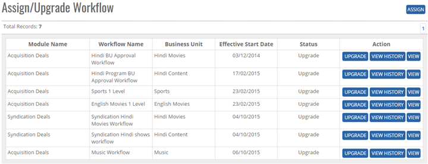
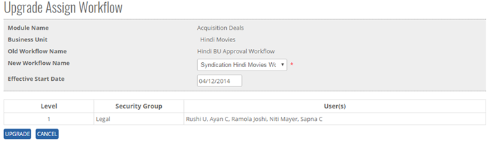


	<section>
		<article>

			<h2>Assign Workflow<span></span></h2>
			<div>
				<p></p>

				<p>In above, we created a workflow for specific Business Unit. User can assign the workflows to deals.</p>

				<div class="triangle-border top">				
					
				</div>

				<p>Click on Upgrade button to assign workflow to particular module with their respective Business Units. User will be presented with the following screen:</p>

				<div class="triangle-border top">				
					
				</div>

				<p><b>Module Name</b> - Displays the module names Acquisition or Syndication depending on the rights.</p>

				<p><b>Business Unit</b> - User can select respective Business Unit for which workflow is being assigned.</p>

				<p><b>Workflow Name</b> - Based on Business Unit selection, workflow names will be populated in this drop down, if the workflow is not assigned. Based on Workflow name selection, users in the workflow will get populated here.</p>

				<p><b>Effective Start Date</b> - This field shows the effective start date of the workflow. It has to be a future date. Workflow can not be made for past dates.</p>

				<p>Click on <b>Assign</b> button to Assign workflow and <b>Cancel</b> to cancel the assigning process.</p>

				<p>Once workflow is saved, user will be presented with Assign Workflow List screen. Here user can select following options:</p>

				<p><b>Upgrade</b> - To upgrade an existing workflow. Click on Upgrade, select new workflow and Assign.</p>

				<p><b>View History</b> - This option shows the history of assigned workflows for particular Business Units.</p>

				<p>View - User can view the assigned workflows from this option.</p>
			</div>
		</article>
	</section>